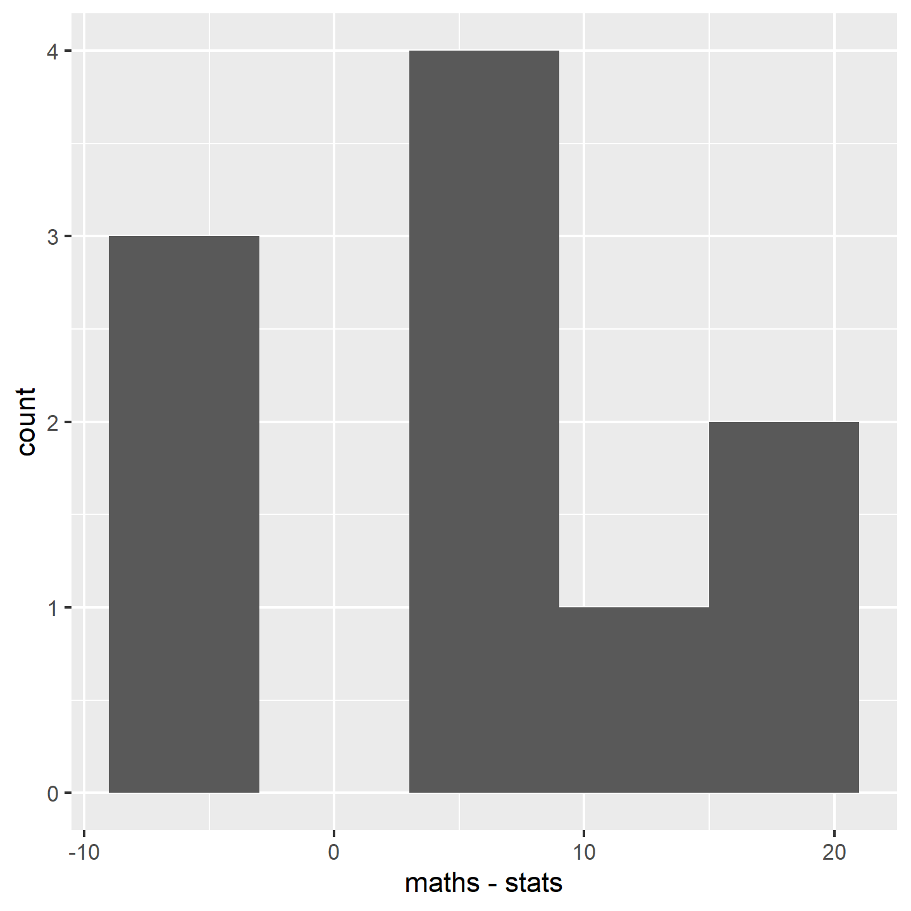

chaff <- read_table("data-raw/chaff.txt")13 Two-Sample tests
Important
You are reading a work in progress. This page is a dumping ground for ideas and not really readable.
13.1 Overview
In the last chapter learned how to about single linear regression, a technique used when the explanatory variable is continuous. We now turn our attention to cases where our explanatory variable is categorical and has two groups. For example, we might want to know if there is a difference in mass between two subspecies of chaffinch, or if marks in two subjects are the same.
We use lm() or wilcox.test() to carry out a two-sample test depending on whether the assumptions of lm() are met. The general linear models applied with lm() are based on the normal distribution and known as parametric tests because they use the parameters of the normal distribution (the mean and standard deviation) to determine if an effect is significant. Null hypotheses are about a mean or difference between means. The assumptions need to be met for the p-values generated to be accurate.
If the assumptions are not met, we can use alternatives known as non-parametric tests. Non-parametric tests are based on the ranks of values rather than the actual values themselves. Null hypotheses are about the mean rank rather than he mean. These tests have fewer assumptions and can be used in more situations but the downside is they tend to be less powerful. This means they are less able to detect a difference where one exists.
13.1.1 General linear model assumptions
The assumptions of the general linear model are that the residuals are normally distributed and have homogeneity of variance. A residual is the difference between the predicted and observed value
If we have a continuous response and a categotical explanatory variable with two groups, we usually apply the general linear model with lm() and then check the assumptions, however, we can sometimes tell when a non-parametric test would be more appropriate before that:
- Use common sense - the response should be continuous (or nearly continuous, see Ideas about data: Theory and practice). Consider whether you would expect the reponse to be continuous
- There should decimal places and few repeated values.
To examine the assumptions after fitting the linear model, we plot the residuals and test them against the normal distribution
13.1.2 Independent samples and paired samples.
An important consideration in conducting tests is whether the values in one groups are independent of the values in another group. Non-independence occurs when the two measures are linked. They could be the same individual, the same time time or the same location. For example, if we want to evaluate a treatment for high blood pressure we might measure blood pressure before and after the treatment on the same individuals. The key consideration is whether pairs of observations in different groups have something in common that make them more similar to each other than to other observations.
13.1.3 Reporting
In reporting the result of two-sample test we give:
-
the significance of effect - whether there is there a difference between the groups
- parametric: whether there is there a difference between the groups means
- non-parametric: whether there is there a difference between the group medians
the direction of effect - which of the means/medians is greater
-
the magnitude of effect -
- parametric: the means and standard errors for each group or the mean difference for paired samples
- non-parametric: the medians for each group or the median difference for paired samples
Figures should reflect what you have said in the statements. Ideally they should show both the raw data and the statistical model:
- parametric: means and standard errors
- non-parametric: boxplots with medians and interquartile rangeWe will explore all of these ideas with some examples.
13.2 Examples
🎬 Your turn! If you want to code along you will need to start a new RStudio project then a new script.
13.2.1 Two independent samples example parametric
A number of subspecies of the common chaffinch have been described, based principally on the differences in the pattern and colour of the adult male plumage. Two of groups of these subspecies are:
- “coelebs group” that occurs in Europe and Asia
- “canariensis group” that occurs on the Canary Islands
The data in chaff.txt give the masses of twenty individuals from each subspecies. We want to know if the subspecies differ in mass. These groups are independent - there is no link between values in one group and any value in the other group.
13.2.1.1 Import and explore
Import the data:
| subspecies | mass |
|---|---|
| coelebs | 18.3 |
| coelebs | 22.1 |
| coelebs | 22.4 |
| coelebs | 18.5 |
| coelebs | 22.2 |
| coelebs | 19.3 |
| coelebs | 17.8 |
| coelebs | 20.2 |
| coelebs | 22.1 |
| coelebs | 16.6 |
| coelebs | 20.7 |
| coelebs | 18.7 |
| coelebs | 22.6 |
| coelebs | 21.5 |
| coelebs | 21.7 |
| coelebs | 19.9 |
| coelebs | 23.1 |
| coelebs | 17.8 |
| coelebs | 19.5 |
| coelebs | 24.6 |
| canariensis | 22.7 |
| canariensis | 20.6 |
| canariensis | 25.4 |
| canariensis | 20.4 |
| canariensis | 21.6 |
| canariensis | 17.0 |
| canariensis | 26.4 |
| canariensis | 20.4 |
| canariensis | 24.7 |
| canariensis | 21.8 |
| canariensis | 23.4 |
| canariensis | 24.4 |
| canariensis | 21.0 |
| canariensis | 23.4 |
| canariensis | 20.5 |
| canariensis | 21.4 |
| canariensis | 21.5 |
| canariensis | 23.7 |
| canariensis | 23.4 |
| canariensis | 21.8 |
These data are in tidy format (Wickham 2014) - all the mass values mass are in one column with another column indicating the subspecies. This means they are well formatted for analysis and plotting.
In the first instance it is sensible to create a rough plot of our data. This is to give us an overview and help identify if there are any issues like missing or extreme values. It also gives us idea what we are expecting from the analysis which will make it easier for us to identify if we make some mistake in applying that analysis.
Violin plots(geom_violin()), box plots (geom_boxplot()) or scatter plots (geom_point()) all make good choices for exploratory plotting and it does not matter which of these you choose.
ggplot(data = chaff,
aes(x = subspecies, y = mass)) +
geom_boxplot()
R will order the groups alphabetically by default.
The figure suggests that the canariensis group is heavier than the coelebs group.
Summarising the data for each subspecies group is the next sensible step. The most useful summary statistics are the means, standard deviations, sample sizes and standard errors. I recommend the the group_by() and summarise() approach:
We have save the results to chaff_summary so that we can use the means and standard errors in our plot later.
chaff_summary
## # A tibble: 2 × 5
## subspecies mean std n se
## <chr> <dbl> <dbl> <int> <dbl>
## 1 canariensis 22.3 2.15 20 0.481
## 2 coelebs 20.5 2.14 20 0.478
13.2.1.2 Apply lm()
We can create a two-sample model like this:
mod <- lm(data = chaff, mass ~ subspecies)And examine the model with:
summary(mod)
##
## Call:
## lm(formula = mass ~ subspecies, data = chaff)
##
## Residuals:
## Min 1Q Median 3Q Max
## -5.2750 -1.7000 -0.3775 1.6200 4.1250
##
## Coefficients:
## Estimate Std. Error t value Pr(>|t|)
## (Intercept) 22.2750 0.4795 46.456 <2e-16 ***
## subspeciescoelebs -1.7950 0.6781 -2.647 0.0118 *
## ---
## Signif. codes: 0 '***' 0.001 '**' 0.01 '*' 0.05 '.' 0.1 ' ' 1
##
## Residual standard error: 2.144 on 38 degrees of freedom
## Multiple R-squared: 0.1557, Adjusted R-squared: 0.1335
## F-statistic: 7.007 on 1 and 38 DF, p-value: 0.01175The Estimates in the Coefficients table give:
(Intercept)which is the mean of the canariensis group (Figure 13.1). Just as the intercept is the value of the y (the response) when the value of x (the explanatory) is zero in a simple linear regression, this is the value ofmasswhen thesubspeciesis at its first level. The order of the levels is alphabetical by default.subspeciescoelebsis what needs to be added to the mean of the canariensis group to get the mean of the coelebs group (Figure 13.1). Just as the slope is amount of y you add for each unit of x in a simple linear regression, this is the amount ofmassthat needs to be added when thesubspeciesgoes from its first level to its second level (i.e., one unit).subspeciescoelebsis negative so the the coelebs group mean is lower than the canariensis group mean
The p-values on each line are tests of whether that coefficient is different from zero. Thus it is:
subspeciescoelebs -1.7950 0.6781 -2.647 0.0118 *
that tells us the difference between the means is significant.
The F value and p-value in the last line are a test of whether the model as a whole explains a significant amount of variation in the response variable. For a two-sample test, just like a regression this is exactly equivalent to the test of the slope against zero and the two p-values will be the same.

13.2.2 Check assumptions
Check the assumptions: All t-tests assume the “residuals” are normally distributed and have homogeneity of variance.
First use common sense: mass is a continuous and we would expect it to be normally distributed thus we would expect the residuals to be normally distributed
Second by plotting residuals:
plot(mod, which = 1)
ggplot(mapping = aes(x = mod$residuals)) +
geom_histogram(bins = 10)
shapiro.test(mod$residuals)
##
## Shapiro-Wilk normality test
##
## data: mod$residuals
## W = 0.98046, p-value = 0.7067Checking the assumptions: normally distributed residuals
- Variance is about the same for all values of x
- Looks roughly normal, symmetrical
- test with shapiro. is NS. note that not significant means not significantly different from a normal distribution. It does not mean definitely normally distributed
13.2.3 Report
Canariensis chaffinches (\(\bar{x} \pm s.e: 22.48 \pm 0.48\)) are significantly heavier than Coelebs (\(20.28 \pm 0.48\) ) (t = 2.65; d.f. = 38; p = 0.012). See Figure 13.2.
ggplot() +
geom_point(data = chaff, aes(x = subspecies, y = mass),
position = position_jitter(width = 0.1, height = 0),
colour = "gray50") +
geom_errorbar(data = chaff_summary,
aes(x = subspecies, ymin = mean - se, ymax = mean + se),
width = 0.3) +
geom_errorbar(data = chaff_summary,
aes(x = subspecies, ymin = mean, ymax = mean),
width = 0.2) +
scale_y_continuous(name = "Mass (g)",
limits = c(0, 30),
expand = c(0, 0)) +
scale_x_discrete(name = "Subspecies",
labels = c("Canariensis", "Coelebs")) +
theme_classic()
13.2.4 Two independent samples example non-parametric
The two sample Wilcoxon also known as the Mann-Whitney. the type of question is the same but the response variable is not continuous or the residuals are not normally distributed or the sample size is too small to tell if they are normally distributed.
Example: comparing the number of leaves on 8 mutant and wild type arabidopsis plants (small samples, counts)
13.2.5 import and explore
arabidopsis <- read_table("data-raw/arabidopsis.txt")Plot your data roughly - violin, points, boxplot
ggplot(data = arabidopsis,
aes(x = type, y = leaves)) +
geom_boxplot()
Summarise
13.2.6 test
wilcox.test(data = arabidopsis, leaves ~ type)
##
## Wilcoxon rank sum test with continuity correction
##
## data: leaves by type
## W = 5, p-value = 0.005051
## alternative hypothesis: true location shift is not equal to 0Warning message: In wilcox.test.default(x = c(3, 5, 6, 7, 3, 4, 5, 8), y = c(8, 9, :cannot compute exact p-value with ties
13.2.7 report
There are significantly more leaves on wild-type (median = 8.5) than mutant (median = 5) plants (Mann-Whitney: W=5, n1 = 8, n2 = 8, p = 0.005)
illustrate
box plot
13.3 Two paired samples example parametric
Is there a difference between the maths and stats marks of 10 students?
13.3.1 import and explore
marks <- read_table("data-raw/marks.txt")Plot your data roughly
ggplot(data = marks, aes(x = subject, y = mark)) +
geom_point() +
geom_line(aes(group = student))
marks_wide <- marks |>
pivot_wider(id_cols = student,
names_from = subject,
values_from = mark)Summarise
calculate the mean differnce and se of mean diff
13.3.2 test
https://steverxd.github.io/Stat_tests/one-mean.html#one-sample
mod <- lm(data = marks_wide, maths - stats ~ 1)summary(mod)
##
## Call:
## lm(formula = maths - stats ~ 1, data = marks_wide)
##
## Residuals:
## Min 1Q Median 3Q Max
## -12.50 -7.25 1.00 5.50 11.50
##
## Coefficients:
## Estimate Std. Error t value Pr(>|t|)
## (Intercept) 6.500 2.778 2.34 0.044 *
## ---
## Signif. codes: 0 '***' 0.001 '**' 0.01 '*' 0.05 '.' 0.1 ' ' 1
##
## Residual standard error: 8.784 on 9 degrees of freedom13.3.3 check assumptions
normally and homogenously distributed residuals differences
ggplot(marks_wide, aes(x = maths - stats)) +
geom_histogram(bins = 5)
13.3.4 report
Individual students score significantly higher in maths than in statistics (t = 2.34; d.f. = 9; p = 0.044) with an average difference of 6.5%.
spaghetti plot
13.4 Two paired samples example non-parametric
maths and stats marks